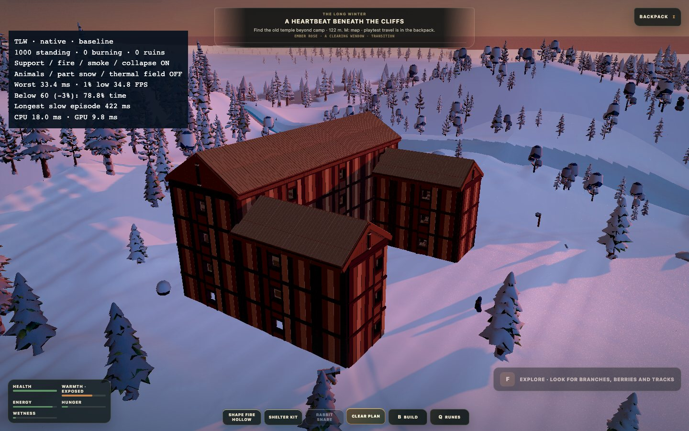
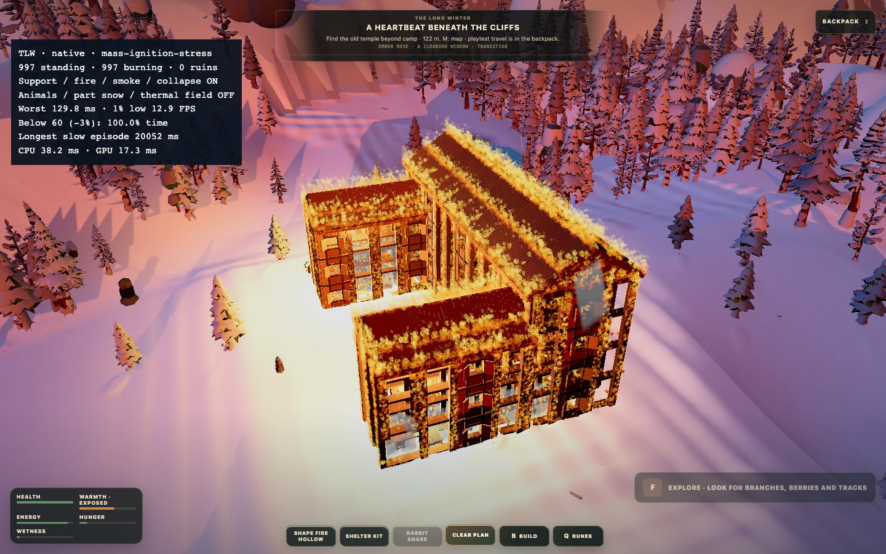
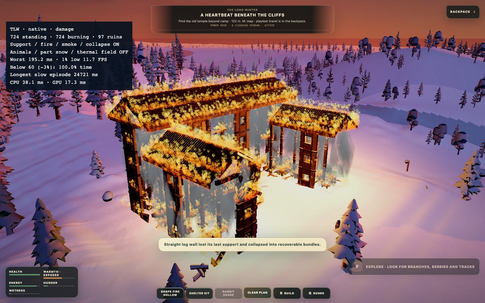
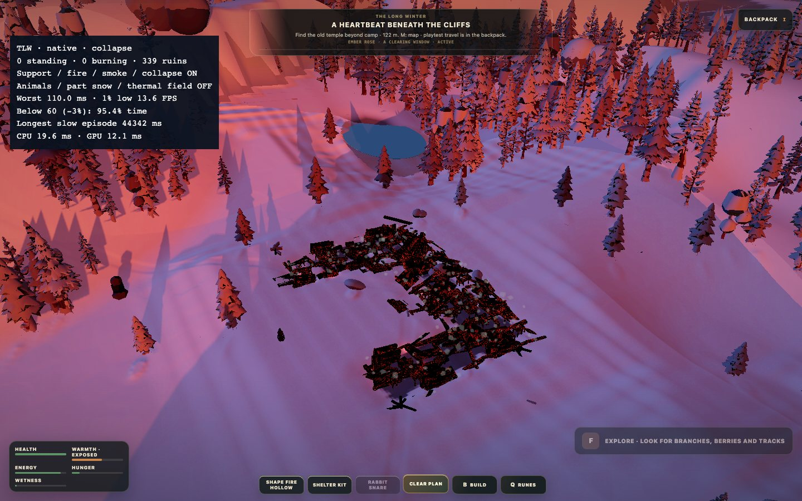
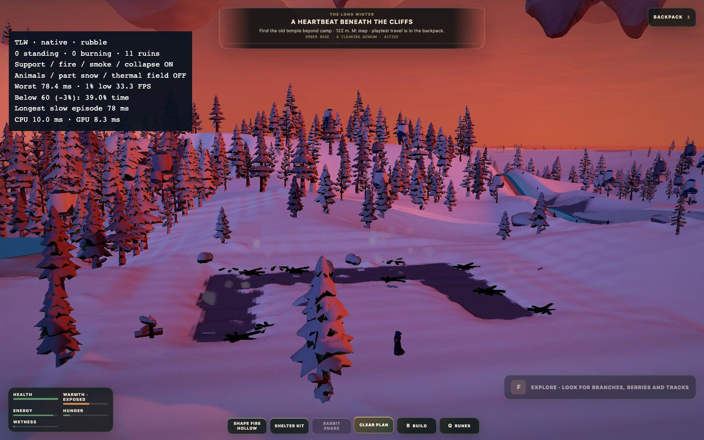

Takaisin peliin
The Long Winter · R36
CPU-työn toiston poisto, pienemmät työerät ja shaderien ensikäytön valmistelu.
Sama 1000 osan talo: katot, sisustus, palaminen, sortuminen ja hiipuvat rauniot.
60 FPS:n tavoitetta ei vielä saavutettu massapalossa. Myös yksittäisiä pitkiä ruutuja jäi.
Tässä raportoidaan p99, pahin ruutu, 1 % low ja hitaan ajan kesto — ei keskiarvo-FPS:ää.
Ennen / jälkeen
Ruutuajat millisekunteina: p99 / pahin. Pienempi on parempi.
Alle 60 FPS:n aika käyttää 3 % toleranssia (yli 17,18 ms ruudut).
Pitkien ruutujen kesto
Yli 50 ms ruutujen lukumäärä / niiden yhteenlaskettu kesto.
Mitä muuttui?
- Palovaurioiden solulajittelun välimuisti ja osakohtaiset vauriokyselyt.
- Sisustuksen tukikyselyt ja savun mitätöinti kohdistetaan muuttuviin rakenteisiin.
- Tukiworkerien tulokset hyväksytään pienemmissä pääsäie-erissä; poolin turha uudelleenluonti poistettiin.
- Savun todistetusti avoimen taivaan kyselyt ja vanhat vastaukset eivät täytä jonoja.
- Liekkien esitysvalmistelun ja ääniryhmittelyn turha toisto poistettiin.
- Shaderien ensikäytön uniform-/attribuuttityö valmistellaan latausruudun aikana.
Katon geometrian jakaminen testattiin mutta jätettiin pois tuotannosta: piirtokutsut vähenivät,
mutta GPU p99 huononi. Hiukkastiheys-, occlusion- ja muut yksityiset kokeilut pysyvät pois päältä.
Hiukkasmäärää tai palon voimakkuutta ei leikattu.
Menetelmä ja rajat
Chrome headless, Apple M1 Pro / ANGLE Metal, 1440 × 900, DPR 1,
10 loogista prosessoria. Eläimet, osien pintalumi ja lämpökenttä olivat jo vertailuversiossa pois päältä.
Kamera kiertää taloa eri korkeuksilta. Buildia tai yksikkötestejä ei ajettu samanaikaisesti.
Ympäristön vaihtelu näkyy myös ehjän talon mittauksissa; täsmällistä yleistä säästöprosenttia ei luvata.
Jonojen nopeutuessa palon elinkaaren tilat eivät pysy ruutu ruudulta identtisinä.
CPU-profilointiajot eivät sisälly FPS-taulukkoon. Niissä käynnistys itsessään aiheutti noin 0,5 s piikin.
R36:n erillinen profiili osoitti edelleen roskienkeruuta ja esitystyötä; kaikkia nykäyksiä ei väitetä korjatuiksi.
Windows/Edge/RTX-varmistusta ei tehty tällä koneella.
Tarkistukset: 94 testitiedostoa / 868 testiä läpi, TypeScript ja tuotantobuild läpi.
Todellisten rakennusohjainten selainkoe läpi. Kaikki neljä täyttä palo-/sortuma-ajoa päättyivät
ilman selainvirheitä ja ilman seisovia rakennusosia. Rauniot ja palon hiipuminen säilyivät.
Raakadata: R35 A1 · R35 A2 · R36 final · Yhteenveto JSON
Lopullisen ajon kuvat

native-baseline.jpg
native-mass-ignition-stress.jpg
native-damage.jpg
native-collapse.jpg
native-rubble.jpg
Build: TLW-FIRE-CPU-2026-09-12-R36. Kuvakaappaukset vaiheiden välissä, eivät mitatun jakson sisällä.